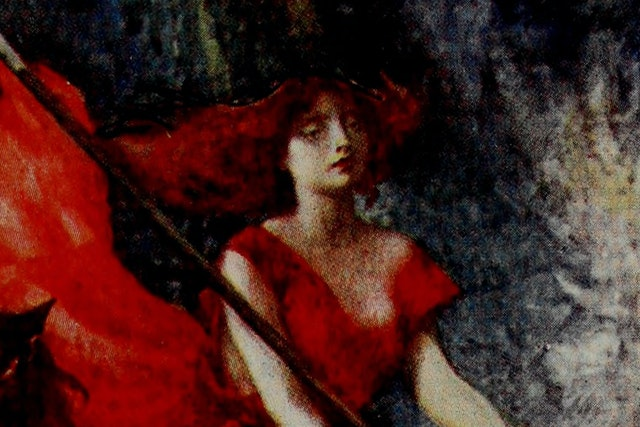

MITHOPÉDIA
MITHOPÉDIA Kelta Istenségek
Morrigan
Három nővér, akik egyetlen istennő alakját ölthették fel. Ő volt a sors őrzője és a próféciák szállítója.
Hogyan kell kiejteni Morrígan szót?
A Morrígan nevét többféleképpen is lehet írni, és a kiejtés az írásmódtól függ. Általában „Mor-REE-gan”-nak ejtik, a hangsúly a második szótagon van.
Morrígan egy istennő volt vagy három?
A Morrígan háromoldalú istennő volt – ami azt jelenti, hogy egyszerre három istennő és egy.
Melyik történetben szerepel Morrígan?
A Morrígan kiemelkedő szereplői közé tartozik a Táin Bó Cúailgne (A Cooley-i marhatámadás), Cath Maige Tuired (Az első és a második moyturai csata) és Lebor Gabála Érenn (Írország elfoglalásának könyve) könyveknek.
A nagy csaták előtt a háború, a halál és a sors istennőjeként megjelenő Morrígan próféciát és kegyet kínált hősöknek és isteneknek egyaránt. Gyakran ábrázolták holló alakjában körözni a csatatéren, hogy dögöt hordjon és egyen, bár gyönyörű nőként is megjelenhetett, aki hatalmas férfiakat csábít el. Ravasz alakváltó és félelmetes haláljós volt az ír mitológia szereplői számára.
A Morrígan számos szent és természeti helyhez kötődik Írország-szerte.
Etimológia
Kiejtés
AngolMorrígan |
ÍrMorrígan |
FonetikusMor-REE-gun |
IPA/mɔɹiɡən/ |
A Morrígan név óír (Morrígan) és középír (Mórrígan) nyelven egyaránt előfordul. A tudósok nem értenek egyet ennek a névnek a pontos etimológiájával kapcsolatban, amelynek két különböző értelmezése van a szó első szótagja alapján. A név óír alakjából származó Mor „fantomként” értelmezhető.2 Whitley Stokes nyelvész szerint ez az angolszász maere szó rokon szava, amely a mai angol rémálomban is fennmaradt. Azonban A mor egyébként hitelesítetlen szó az óírben.
A közép-ír korszakban a nevet gyakran írták Mórnak (az „o” ékezettel, ami azt jelenti, hogy „nagy”. Nevének második része, a rígan jelentése „királynő”, és rokon értelmű Latin regina. Így neve „Nagy Királynőként” vagy „Fantomkirálynőként” is értelmezhető, bár a „Nagy Királynő” a tudósok körében előszeretettel alkalmazzák.
Alternatív nevek
Morrígant néha Morrígunak nevezték. A Morrígant és változatait is alkalmanként a természetfeletti női alakok általános neveként használták.
Tulajdonságok
Morrígan mindentudó és hatalmas figura volt, aki időnként próféciáit és mágikus kegyeit adományozta hősöknek és királyoknak – bár általában fizetségért. A Táin Bó Cúailgnében (A Cooley-i marhatámadás) Morrígan a következő baljós próféciát mondja az elkövetkező háborúról:
A holló ravasz
Férfi holttestek között
Nyomorúság és felháborodás
És örök háború
Cúailgne fölött tombol
A fiak halála
A rokonok halála
Halál! Halál!
Amellett, hogy próféta volt, a Morrígan alakváltó is volt, és gyakran több formában is megjelent egyetlen történetben. Leggyakoribb alakjai a formás leányzó, a vad harcos-királynő, a vén trón és a holló voltak.
A próféciákkal és a sorssal való szoros kapcsolata miatt Morrígan gyakran jelen volt prominens személyiségek halálánál; például hollóként jelent meg, aki Ulsteri haldokló hősének, Cú Chulainnnek a vállára szállt. Időnként túlvilági mosónőként is ábrázolták, aki a halottak vérfoltos ruháit mossa.
Írország számos helyszíne név szerint kapcsolódik a Morríganhoz. Néhány példa a Fulacht na Mór Ríoghna (a Morrígan főzőgödre) Tipperary megyében és két domb Meath megyében, amelyek Da Cích na Morrígna (A Morrígan két melle) néven ismertek.
Háromoldalú istennő
A Morrígan egyik legkiemelkedőbb jellemzője háromoldalú természete. Sok történetben egyénként és három istennőként is megjelenik, akik egyetlen név alatt tevékenykednek.
A három istennő kiléte a forrástól függően változik. A legtöbb esetben Badb, Macha és Nemain Morrígan néven szerepel, bár néha Badb, Macha és Dannan/Danu (vagy Anand/Anu) néven adják. A Badb különösen a Morrígan megjelenésével függ össze. holló a csatatéren. Ezeket az istennőket néha a Morrígan nővéreiként is feltüntetik. A Morrígan tagjai közötti eltérések valószínűleg a helyi legendák közötti különbségekre vezethetők vissza.
Az istennők egymástól függetlenül is cselekedhettek. A Táin Bó Cúailgne-ban Nemain és Badb, a Morrígant alkotó két istennő az éj leple alatt kiált az ír férfiakhoz. Hívásaik hangja annyira félelmetes, hogy 100 ember hal meg az ijedtségtől. A Morrígan sikoltozása a közelgő szerencsétlenség szörnyű előjele volt.
A Család
Lebor Gabála Érenn (Írország elfoglalásának könyve), az ír népek eredetét magyarázó történetben a Morrígan Ernmas anyaistennő lányaként szerepel. Ernmas maga Nuadának, a varázslatos Tuatha Dé Danann ("Danu istennő törzse") királyának a lánya volt. Morrígan apja továbbra is ismeretlen. Testvéreit Ériu, Banba és Fódla néven említik – akik az Írország szellemét és szuverenitását képviselő hármas istennőt alkották –, valamint Badb és Macha néven.
A Morrígan feleségül vette Dagdát, a „Jó Istent” és a Tuatha Dé Danann egyik királyát.
Családfa
Szülők
Anya
Ernmas
Testvérek
Nővérek
Ériu, Banba, Fódla
Házastársak
Férj
Dagda
Mitológia
Származás
Lebor Gabála Érenn a Morrígan a Tuatha Dé Danann, a varázslatos emberek törzsének tagjaként szerepel. A törzs Írországba érkezése ellenállásba ütközött a sziget korábbi telepesei, köztük a firbolgok és a fomorionok természetfeletti fajai. A Tuatha Dé gyorsan háborúban találta magát a Firbolggal, ami két heves csatában tetőzött.
Cath Maige Tuired
Két Moytura vagy Cath Maige Tuired csata volt. Az első moyturai csatában Morrígan és nővérei varázsigékkel segítettek a csatában:
Ekkor történt, hogy Badb, Macha és Morrígan [...]
varázslatos varázszáporokat, tömör ködfelhőket és
dühös tűzesőt bocsátottak ki, vörös vér záporral
a harcosok fejére a levegőből.
Végül a Tuatha Dé győzedelmeskedett, és megvetette a lábát Írországban. További konfliktusok azonban a láthatáron. A fomorionokat nehezebbnek bizonyult legyőzni a második moyturai csatában. Miközben a Tuatha Dé a fomorionok elleni csatára készült, a Dagda feleségét, Morrígant kereste, hogy jóslatot kérjen. Egy folyó gázlójánál talált rá, ahol közösködni kezdtek. Amikor befejezték, a Morrígan megjövendölte, hogy a Tuatha Dé Danann valóban megnyeri a csatát, bár győzelmük nagy vérontás árán lesz.
A csata napján az istenek összegyűltek, és felkészültek a fomorionok hordáival való harcra. Arra a kérdésre, hogy a Morrígan milyen képességeket hozna a csatába, azt válaszolta: „Amit követni fogok, azt vadászni fogom.” A csata gyorsan vérfürdővé változott, és akkor ért véget, amikor a Morrígan vérszomjasságot szított a Tuatha Dé Dannan felé kiáltásával. A fomorionok elmenekültek előle, és a tengerben pusztultak el.
Ulster ciklus
A Morrígan kiemelkedő szerepet kapott az Ulsteri meseciklusban, ahol egyszerre segítette és ellenezte a ciklus hősét, Cú Chulainnt.
A Táin Bó Regamnában (Regamain szarvasmarha-támadása) Cú Chulainn megtámad egy idős nőt, aki egy üszőt hajt ki a területéről. A nő azonban hollóvá változik, és Cú Chulainn, ráébredve, hogy a Morrígan az, kijelenti, hogy bölcsebben cselekedett volna, ha tudja, ki ő. A helytelen viselkedés miatti büntetésül Morrígan megjövendöli saját jelenlétét Cú Chulainn halálakor a Táin Bó Cúailnge-ben:
Aztán látta, hogy fekete madárá vált a közelében egy ágon.
– Veszélyes nő vagy – mondta Cú Chulainn. [...]
„Én a te halálod őrzője vagyok; és az leszek – mondta a lány.
Később a Táin Bó Cúailgne-ben hollóként jelenik meg, és figyelmezteti Cooley Barna Bikáját, hogy meneküljön el Ulsterből, mielőtt Medb Connacht királynője elfoghatja. Amikor a Medb megszállta északot, Ulster összes emberét elgyengítő átok sújtotta. Egyedül Cú Chulainnt kímélték meg, és ő egyedül védte Ulster határait.
A harc szünetében egy fiatal lány felajánlotta magát Cú Chulainnnek szeretőnek, de azonnal elutasították. Amikor ismét harcba kezdett, Cú Chulainnt különféle állatok támadták meg: először egy angolna, majd egy farkas, végül egy üsző. Cú Chulainn sikeresen megvédte magát ezektől az állatoktól, és közben megsebesítette őket.
Győzelmét követően Cú Chulainn találkozott egy tehenet fejő idős asszonnyal. A nő egyik szemére vak volt, eltört a lába és megrepedt a bordái; ezek a sérülések megegyeztek azokkal a sebekkel, amelyeket a harcos ejtett állattámadóin. Az öregasszony három itallal kínálta meg Cú Chulainnt üszőjéből, és minden ital után megáldotta. Minden egyes áldással, amit kapott, az asszony egyik sebe begyógyult. Amikor teljesen meggyógyult, a nő végre felfedte valódi természetét, mint Morrígan. Emlékeztette Cú Chulainnt korábbi sértéseire, és távozása előtt figyelmeztette a közelgő halálára.
A Medb királynő harcosaival vívott későbbi csata során Morrígan jóslata végül beigazolódott: Cú Chulainn halálosan megsebesült. Megesküdött, hogy felállva hal meg, és szabad belsőségeivel kőhöz csapta magát, abban a reményben, hogy azzal elhiteti ellenségeit, hogy még él. A taktika bevált, a szemben álló erők beletörődtek. Csak amikor egyetlen holló, a Morrígan Cú Chulainn vállára szállt, ellenségei rájöttek az igazságra.
Egyéb mitológiák
A Morrígan egyedülálló az ír mitológiában, bár a tudósok hasonló alakokat találtak a kelta hagyományokban. Az egyik ilyen figura volt Morgan le Fey, az Artúr legenda nagy ellenfele, aki számos tulajdonsággal osztotta meg a Morríganokat. Mindketten alakváltók és próféták voltak, akik többféle formában jelentek meg. Míg egyes tudósok úgy vélik, hogy az alakok nevei ugyanabból az etimológiai gyökből származnak, a Morgan és Morrígan teljesen eltérő jelentéssel bír a walesi és ír nyelven, ami a legjobb esetben is gyengévé teszi a kapcsolatot.
A Morrígan hasonlóságot mutat az ír mitológia szuverenitásistennői alakjaival is. Ezeket a figurákat gyakran úgy ábrázolják, mint Írország földjéhez és uralmához vezető csatornát – vagyis az istennő alakjának termékenysége a föld termékenységét és jólétét tükrözi. A Morrígan szorosan kötődik a tájhoz Írország azon területein keresztül, ahol a termőföld. a nevét a Dindshenchákban (amely meséket tartalmaz arról, hogyan kapták el a nevüket Írország helyek).
Feltételezték, hogy a Morrígan az ír folklór bab sidhéhez vagy banshee-jához kapcsolódik. A Morrígan baljós sikoltozása és jelenléte az emberek halálakor inspirációként szolgálhatott a banshee számára, vagy ugyanabból a szájhagyományból származhatnak.
A kelta mitológián kívül sok hasonlóság figyelhető meg a Morrígan és az óskandináv legenda valkűrjei között, köztük egyedül vagy hármasban való megjelenésük, jóslási képességük, és a madarakkal való kapcsolatuk. Patrick K kelta tudós szerint. Ford, a mitológiai nők, mint a Valkűr és a Morrígan az élet teljes körét képviselik: hatalmuk volt életet adni (szüléssel) és elvenni (azáltal, hogy kiválasztják, ki haljon meg a csatatéren). Így természetes volt, hogy a női alakok ismerjék a férfiak sorsát.
Pop kultúra
A Morrígan gyakori alak a médiában, és ennek eredményeként megőrizte nagy kulturális relevanciáját.
A Sanctuary című kanadai televíziós sorozatban feltűnik abnormális nők erőteljes hármasaként. A Lost Girl című kanadai fantasy televíziós sorozatban a Morrigan a Sötét Fae vezérének a címe.
A Morrígan számos képregénysorozatban is megjelent, köztük a Marvel Comics-ban – ahol a kelta panteonban hatalmas istennőként ábrázolják – és a The Wicked + The Divine-ben. Végül számos videojáték szereplője, köztük a Darkstalkers és a Dragon Age sorozat.